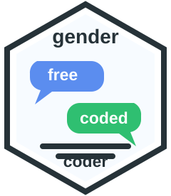

The goal of gendercoder is to allow simple re-coding of free-text gender responses. This is intended to permit representation of gender diversity while managing misleading responses and the workload implications of manual coding.
Installation
You can install the development version from GitHub with:
devtools::install_github("ropensci/gendercoder")
library(gendercoder)Basic use
The gendercoder package permits the efficient re-coding of free-text gender responses. It contains two built-in English output dictionaries, a default manylevels_en dictionary which corrects spelling and standardises terms while maintaining the diversity of responses and a fewlevels_en dictionary which contains fewer gender categories: man, woman, boy, girl, and sex and gender diverse.
The core function, recode_gender(), takes 3 arguments,
genderthe vector of free-text gender,dictionarythe preferred dictionary, andretain_unmatcheda logical indicating whether original values should be carried over if there is no match.
Basic usage is demonstrated below.
library(gendercoder)
df <- data.frame(
stringsAsFactors = FALSE,
gender = c("male", "MALE", "mle", "I am male", "femail", "female", "enby")
)
df$manylevels_gender <- recode_gender(
df$gender,
dictionary = manylevels_en,
retain_unmatched = TRUE
)
#> Results not matched from the dictionary have been filled with the user inputted values
df$fewlevels_gender <- recode_gender(
df$gender,
dictionary = fewlevels_en,
retain_unmatched = FALSE
)
df
#> gender manylevels_gender fewlevels_gender
#> 1 male man man
#> 2 MALE man man
#> 3 mle man man
#> 4 I am male I am male <NA>
#> 5 femail woman woman
#> 6 female woman woman
#> 7 enby non-binary sex and gender diverseThe package also includes a local Shiny app for interactive recoding:
The app accepts .csv, .dta, .sav, .rds, .rda, and .RData files. It displays the selected gender column and the recoded output column, then lets you download the full recoded data.
Contributing to this package
This package is a reflection of the cultural context of the package contributors. We acknowledge that understandings of gender are bound by both culture and time and are continually changing. As such, we welcome issues and pull requests to make the package more inclusive, more reflective of current understandings of gender-inclusive languages and/or suitable for a broader range of cultural contexts. We particularly welcome addition of non-English dictionaries or of other gender-diverse responses to the manylevels_en and fewlevels_en dictionaries.
The Adding to the dictionary vignette includes information about how to make changes to the dictionary either for your own use or when contributing to the gendercoder package.